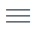

Tutorial#
Welcome! This template is a guide for creating a new course at Tel Aviv University, the Faculty of Exact Sciences, using the Jupyter Book library. It is based on Barak Hirshberg’s Molecular Simulations course, whose source code is available at the following link: Molecular Simulations
Jupyter Book is an open-source library used for creating interactive, web-based books and documents from Jupyter notebooks. It allows authors to combine text, code, mathematical equations, visualizations, and other multimedia content into a cohesive narrative that can be easily shared and published online.
Goal#
In this tutorial, you will learn how to open and edit your course using the GitHub codespaces environment, as well as building the course and publishing it as an HTML website using GitHub pages. (Don’t worry! it will become clear soon.)
1. Course Structure#
Just like on Moodle, every course is built from several topics/lessons. Each one is an .ipynb file which includes all the relevant material. All files should be placed in the main directory, accessible by clicking the explorer button found on the left side of the screen). File with the suffix .yml are settings and configuration files. The most important ones are _toc.yml which defines the structure of your course and _config.yml for general settings.
2. Editing cells#
Every topic/lesson notebook is composed of several cells. Each cell can be edited separately. To enter edit mode, you need to double click the cell. This will allow you to make changes, try editing this cell now!
3. Apply changes#
Clicking the V sign on the top right of this cell will make the changes take effect in the cell. You can also use the short key Shift+Enter to apply changes. Go back to the previous cell and try it!
4. Adding cells#
You can click the three dots on the right top right of this cell, and select the insert cell menu. You can add Markdown cells or Code cells.
Try adding a new Markdown cell below this one now.
5. Cell types#
The notebooks supports two cell forms. Click the three dots on the right of this cell. You can switch between Code and Markdown cells:
Markdown: suitable for text and math.Code: integrated code environment supporting python, with code execution and output display.
Try changing the type of the cell you just added to Code, the change back to Markdown.
6. Formatting text#
Markdown cells are pretty flexible with formatting. We have provided several examples for headings, styling and including bibliographic references in the file Markdown.
Try adding several heading, text in italics, and text in bold font to the cell you just added.
7. Special, non-text content#
Jupyter Book supports special content, such as:
We have provided examples for each component in a separate, appropriately names .ipynb file, which are available on the left side of the screen, in the Additional Content folder. The goal is for you to copy the cells from them and paste them in your topic notebook, as appropriate. Keep in mind some of the features will be visible only in the html course format (explained below).
Try adding a new cell after this one, change its type to Markdown, and include a math equation or an active learning question.
8. Adding new topics/lessons#
You can open a new notebook by clicking the three lines button  on the top left side of this page, and selecting File, then New File. This will open a menu on the top of this page. Name your new topic file and select the jupyter notebook to add it.
Please create a new topic now, called Topic1.ipynb and create a new Markdown cell with some text in it.
9. Editing the Table of Contents#
On the left side of this page in the list you will find the _toc.yml file. The structure of your course is determined by this file.
This template has the Welcome page as its root, which is the first page users will see when accessing the course website. All other files that appear under the chapter section will be included in the course in that order.
Files that are not mentioned in the table of contents will not appear as part of the course website, but you can still edit them and they will saved in your repository.
Click the _toc.yml file now and add a the new topic you just created to the course by adding - file: Topic 1 in a new line.
10. Save and track your changes#
Saving and tracking your work with GitHub is one of the most popular ways to manage your coding projects (including this course).
On the left side of the screen click the Source Control button . This will open a left menu. In the message line, add a short message describing the changes you have made, then push the green Commit button. ON the message prompt click Yes, the push the new green button Publish. A new menu will open, Rename your course repository and publish it to github. The opened menu allows you to create a private or public repository (private may work only under Pro github account). Note that setting your repository public will allow your students to access unpublished content of the course.
Try it now!
This is the first commit. from now on every time you wish to save changes, open the Source Control panel, commit your changes with a message, then push the green Sync button.
11. Setup Jupyter Book#
Before we can update the changes you have made to this course, we need to setup the Jupyter Book environment. This needs to be done only once, Codespaces will save your setup for future uses.
Click the three lines button on the top left side of this page, select
TerminalthenNew terminal. this will open a command line window.Type
cd scriptsand pushEnterto access the scripts folder.To setup the codespace, type
./setup.shand pushEnter.
Setup the environment now.
12. Update the course locally (build)#
Next, we would like to update the changes you have made to this course and look at a preview of the website before publishing it.
On the left side of your screen, in the scripts directory, you will find multiple auxiliary bash scripts. These scripts will allow you to handle and manage the updates to this course, without being familiar with Linux.
Build the course Website:
on the opened terminal in the scripts directory, type
./clean.shand pushEnterto remove any existing build data.Next type
./build.shand pushEnterfor the changes to take effect.
Try locally building your website now.
13. Preview the website#
After calling the ./build.sh script, local .html files will be built. You can preview your website by using the Preview Extension. First select the Extensions buttons to your left and type Preview. click install on the second extension Live Preview by Microsoft.
Next, click the left explorer button and access the following file in your course directory:
Access the
_buildfolder, then enter thehtmlfolder.Right click the file
index.htmland select theShow Previewoption. this will open a web page where you can see the current version of your course. If you wish to preview it full screen, select the 4 lines button in the preview screen, on the right to the address and clickopen in browser. Remember this is a local file, we still need to publish it online for the course to be globaly accessible.
Try and preview the website before proceeding:
14. Publish book online#
Jupyter Book makes it easy to publish your work online with the ‘ghp-import’ package. This script helps you quickly put your Jupyter Notebooks, Markdown files, and other content onto GitHub Pages, a place where you can share your work with others. Instead of worrying about the technical stuff, like how to convert your files or where to put them, the script takes care of it for you:
Click the three lines button on the top left side of this page, select
TerminalthenNew terminal. this will open a command line window.Type
cd scriptsand pushEnterto access the scripts folder.Type
./publish.shand pushEnterto deploy your Jupyter Books onto GitHub Pages.
Remember, this command is called after you built your course locally, so keep in mind the online course will match your local version.
Try publishing your course website now! Insert your github UserName and CourseName and go to the following address: (https://UserName.github.io/CourseName/) Please be patient, this action can take several minutes before the site appears online.
15. Exiting the Codespace environment#
If you wish to exit the Codespace environment, you can just close this Tab. Github keeps the environment in an idle mode. You can access the Codespace environment again from your github account clicking the centered green button Code and selecting the Codespace tab.